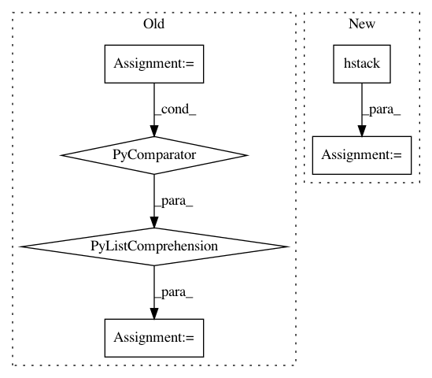

2526879b1f941c887eeb24a267b5ea010e20d5d7,PyNomaly/loop.py,LocalOutlierProbability,_ssd,#LocalOutlierProbability#Any#,137
Before Change
if ssd == 0.0:
warnings.warn("Sum of square distances equals zero. Execution halted.", RuntimeWarning)
sys.exit()
ssd_dict[cluster_id] = ssd
data_store = np.hstack((data_store, np.array([[ssd_dict[x] for x in data_store[:, 0].tolist()]]).T))
return data_store
def _standard_distances(self, data_store):
return np.hstack(
After Change
ssd = np.sum(np.power(cluster_distances[0], 2), axis=1)
for i, j in zip(indices[0], ssd):
ssd_array[i] = j
data_store = np.hstack((data_store, ssd_array))
return data_store
def _standard_distances(self, data_store):
cardinality = np.array([self.n_neighbors] * self._n_observations())
In pattern: SUPERPATTERN
Frequency: 3
Non-data size: 6
Instances
Project Name: vc1492a/PyNomaly
Commit Name: 2526879b1f941c887eeb24a267b5ea010e20d5d7
Time: 2017-12-17
Author: vc1492a@gmail.com
File Name: PyNomaly/loop.py
Class Name: LocalOutlierProbability
Method Name: _ssd
Project Name: biolab/orange3
Commit Name: 69a472517120ffee300a967b2fe9b3bc05f5cf4b
Time: 2015-06-23
Author: ales.erjavec@fri.uni-lj.si
File Name: Orange/widgets/unsupervised/owmds.py
Class Name: OWMDS
Method Name: _setup_plot
Project Name: PyMVPA/PyMVPA
Commit Name: 532b84a46f5015b9e1faacc3f9bee956a1d038de
Time: 2010-01-04
Author: michael.hanke@gmail.com
File Name: mvpa/measures/searchlight.py
Class Name: Searchlight
Method Name: _call